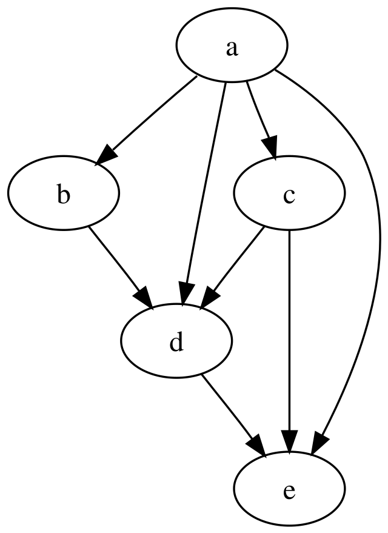
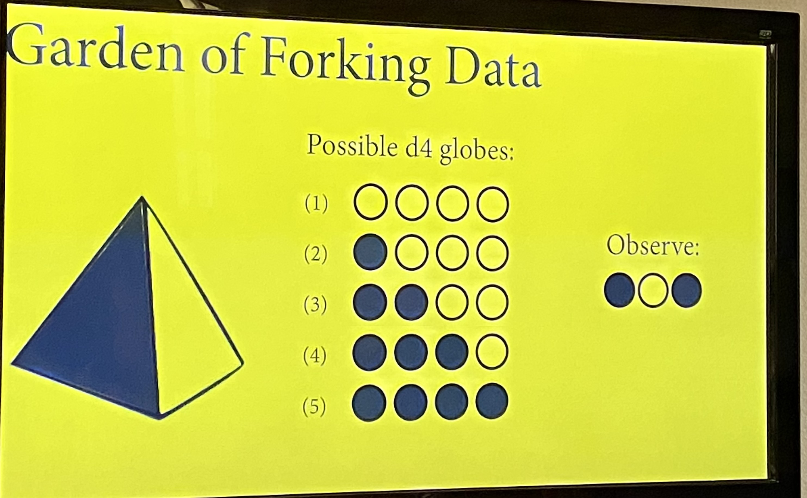
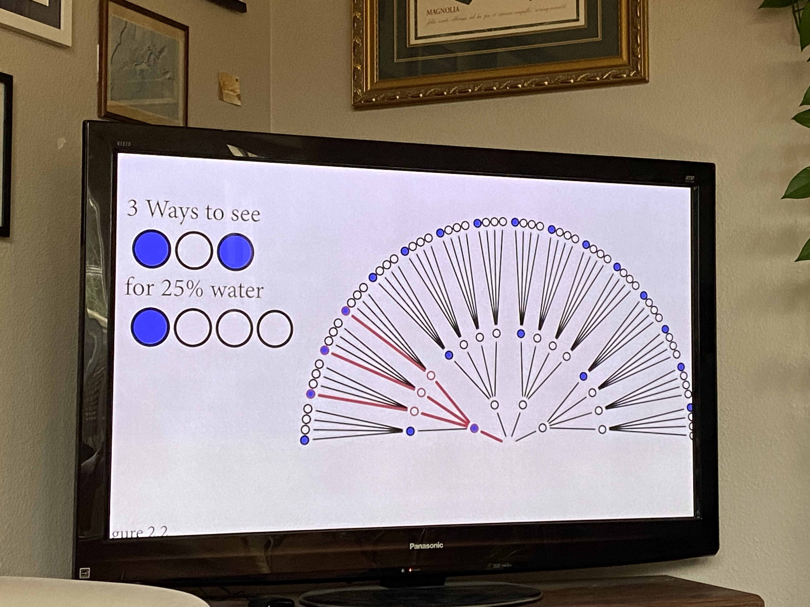

The core issue with frequentist stats is that it’s based on proving null hypotheses wrong. in reality, deductive falsification is impossible:
“(1) Hypotheses are not models. The relations among hypotheses and different kinds of models are complex. Many models correspond to the same hypothesis, and many hypotheses correspond to a single model. This makes strict falsification impossible.”
In order to try to falsify a hypothesis we have to create a model to approximate it, but all models are false - trying to falsify it doesn’t answer the hypothesis.
(2) Measurement matters. Even when we think the data falsify a model, another observer will debate our methods and measures. They don’t trust the data. Sometimes they are right.”
We need to use chance and uncertainty to discover reliable knowledge. All stats relies on this to some extent, but bayesian analysis embraces it most fully.
DAGS
There’s frequently a stats discourse between Bayes and Frequentist stats - we’re not going to talk about that at all really, just instead about “causal inference”
For statistical models to produce any scientific insight, they require additional scientific (causal) models. The reasons for a stats analysis are not found in the data, but instead in the causes of the data: causes can’t get extracted from the data alone, need an additional causal model. “no causes in, no causes out!”
What is causal inference?
more than association between variables - associations run both directions - there’s no causation in there.
instead, causal inference is a prediction of intervention - it’s the prediction of the consequences of changing one variable on the others
if you look outside and trees are swaying, you know that wind is causing the trees to sway. knowing the cause means being able to predict the consequences of an intervention. the “what if I do this?” question. There’s nothing within the data themselves to say that, you just know something extra.
or, can be thought of as the imputation.
knowing the cause means being able to construct unobserved counterfactual outcomes “what if I had done something else?”
Causes are not optional!
even when the goal is descriptive science, you still need a causal model: the sample differs from the population - describing the population requires causal thinking about why it’s different from the population
Now back to DAGS:
Directed Acyclic Graphs
they’re heuristic causal models that clarify scientific thinking - if you change an variable at the start of an arrow, it will change the thing at the end of the arrow: “What can we decide, without additional assumptions?”. These are the gateway to scientific modeling.
basically they’re letters with arrows between talking about what influences what.
different questions have different models - each causal query would require a different model.

comes down to choosing good control variables. there’s also bad controls - you can’t just add everything.
DAGS help you understand how to test/refine the causal model
GOLEMS
the golem of prague was built for a particular task but blind to the intent, so harm happened accidentally along the way - so he got decommissioned NO MORE GOLEM!
We’re also designing a lot of golems - we’re making statistical models that execute the instructions we give them but they’re blind to our intent. they’re powerful, they’re good, but they have no wisdom or foresight and applied in the wrong context they can be dangerous
we’re traditionally taught flowcharts of what to do with what types of data (if you have x type of data, use y test). But, this approach is limiting! focuses on rejecting null hypotheses, doesn’t teach the relationship between the research and the test.
We are doing observational work, and in these contexts null models are rarely unique. they don’t really work - what’s a null population dynamics model? This is apparently not sensible
SO! Research requires more than null robots. We’re making golems, so we’ll need: generative causal models (built on DAGs initially), and then use those to make statistical models justified by generative models and questions (called estimands, which are the quantities that we’re trying to estimate by statistical analysis). this is an effective way to produce estimates I guess.
Justifying “controls”
When looking at the above model, the relationships between the variables affecting any given variable make it hard to pick control variables. apparently we’ll later learn a way to pick which variables are right based on this to make up the “adjustment set” (I think, the ones to include?)
We have finite data but infinite problems. a DAG is not enough - we need a generative model to design inference. He thinks that the way to do this is a bayesian framework to get the best outcome with the least fuss.
Bayes is practical, not philosophical - in theory sometimes Bayes is overkill - in theory in simple analyses there’s little difference between frequentist stats and bayesian stats and bayes adds mess. but in REALITY, ecological analyses have a bunch of measurement error, missing data, latent variables, etc - and bayes handles this with less fuss!
He thinks the statistics wars are over on this point. Bayes is no longer controversial or marginalized - bayesian methods are routine, it’s just that we’re waiting for teaching to catch up.
OWLS!
this is our workflow!
he’s trying to teach us the intermediate steps between drawing some circles and drawing the rest of the owl. we’re going to try to document all the steps of drawing the owl as it were, and i think we’re going to do that using R.
drawing the bayesian owl:
necessary because scientific data analysis is like software engineering done by amateurs. We do a lot of scripting, which is a simple kind of programming, and should be treated as such!
three modes of drawing our owls:
understand what you’re doing - don’t just make code salad
document your work to reduce error
we also want to be able to produce a respectable scientific workflow
our basic owl steps:
outline a theoretical estimand (figure out what you want to know)
scientific (causal) models (this is like a formalized conceptual model, the DAG)/generative models (this is like what the math would actually look like written out)
use first two to build statistical models (statistical models are the bridge between declaring what you think is happening vs actually crunching the numbers)
then, use simulation from the generative model to validate that the statistical model yields our theoretical estimand
analyze the real data
Lecture 2 notes: The Garden of Forking Data
We’re going to try to estimate the proportion of our earth that is covered by water, imagining that we have a globe that we can throw in the air, and that every time we catch the globe with one finger we mark down if it’s land or water. do that again and again to get a sample, use that to estimate the proportion of the surface that’s water.
Our estimand is the proportion of the globe that’s covered by water.
so:
how should we use the sample to get at the estimand to produce an estimate?
how to produce a summary of that?
and how to represent uncertainty of that estimate?
so:
1) define generative model of the sample
2) define a specific estimand
3) design a statistical way to produce an estimate
4) test 3) using 1)
5) analyze sample, summarize
step 1 - generative model of the globe
begin conceptually - how do the variables influence one another?
there’s p, the proportion of water
there’s N number of tosses
W number of water observations
L number of land observations
now want to write down the relationships between:
N influences W and L (more times you toss globe, bigger #s of W and L) so arrows from N to W and L representing causal influences (if you change N, W and L change)
p influences W and L (if there’s a different proportion, it would change the numbers of W and L)
the above is the written out DAG. to make this generative, you need to write out what the arrows mean exactly -
W,L = F(p,N)
this says that W and L are some function of p and N
Bayesian data analysis
for each possible explanation of the sample, count all the ways the sample could happen. Explanations with more ways to produce the sample are more likely to be true.
He calls this, the “Garden of Forking Data” - some of the things that happen in the process of sampling are from how we’re collecting the data, some are from natural processes, but they all influence the sample.
For each possible proportion of water on the globe, count all the ways the sample of tosses could happen. Proportions with more ways to produce the sample are more plausible.
Step 3 - design a statistical way to produce estimate
I think we’re now setting up how we could do this simply if we had a four sided globe

we have 5 possibilities for our globe, we did 3 tosses, got water land water.
you do this for each of the possibiliites (for 25% water shown below)
figure out what the options are (above) then,

You would do the same process for each of the different options (of the original five), to get the below:
the garden diagram literally becomes formulas:
then you can get more data by tossing your globe again:
so eventually if you have a bunch of data you have a bunch of data points to deal with:
in the above, the first number getting multiplied is the number of ways to get water multiplied by the number of observations of water. The second is the number of ways to get land in that scenario multiplied by the number of observations of land. so you then get to the formula at the bottom, which is that the number of observations of water and land are a function that looks like that. I got lost on that point but am choosing to try to be okay about that.
Now we’re talking about probability
Probability are non-negative values that sum to one. Suppose W = 20, L=10, then P=0.5 has
2W x 2L = 1,073,741,824 ways to produce sample - the numbers actually get crazy big super fast, so we convert to probability. I guess this is just to make it less messy in your computer bc the numbers get ridic so instead doing it by the proportion of 1 for the total is tidier:
the posterior distribution is posterior to the sample - it’s after collecting the data?
Step 4 - now test step 3 using step 1
we always want to test before we estimate. to do that, we first code a generative simulation, then code an estimator. then we test the estimator with the generative simulation. this makes the data that we can then use to run our formula which is asking about what the reality is based on the data we collect. so below, we’re making a function that produces some observations based on the proportion of water on our globe:
#function to toss a globe covered p by water N timessim_globe <-function (p =0.7, N=9){sample(c("W", "L"), #possible observationssize = N, #number tossesprob =c(p,1-p), #probability of each possible observationreplace =TRUE)}sim_globe()
sim_globe(p=1, N=11) #like, what if it's fully water, there should be no land!
[1] "W" "W" "W" "W" "W" "W" "W" "W" "W" "W" "W"
motto is test! all code has bugs! you don’t want the bugs to influence the results! the simulation needs to honestly represent the model you intend, so you test that first (i think above), THEN, you code the estimator and then test it using the simulation function. that’s below (we’re just writing the formula into an R function). so, we made some fake data above, and then we need to make an R function that uses the fake data to tell us about the probabilities of each original scenario being the reality based on the data we observed:
so you would then wrap sim_globe in the compute_posterior function. basically saying, with the data we got, what’s the likelihood of each of the original cases:
Now let’s build up some intuition to move from our 4 sided globe to 10 to 20 to infinity:
As you get more possibilities, the number of proportions increases, and the distribution smooths out across them - so the highest probability will get smaller as it gets spread out over more
Infitinite possibilties - so, the globe is a polyhedron with an infinite number of sides. the probability of any “side” p, is still proportional to pW (1-p)L . with some calculus, that takes us to the “Beta” distribution:
this distribution gives us the posterior probability of any particular value of p. the normalizing constant is there so that your probabilities sum to 1, and the second term is just the thing from before - # ways to observe sample
your posterior distribution is the estimate for the parameter after you’ve incorporated data from your prior. That’s your best estimate of whatever you’re trying to estimate. It can take any form. the beta distribution is the shape of the posterior that you want when you have a probability between 0 and 1 that you’re trying to estimate
now, we do ten tosses of our actual globe (note that when we do infinite possibilities we call it density instead of probability):
so you get a refining peak of your curve as you get more and more data from tossing again and again
some lessons from this!
with bayesian data, there’s no minimum sample size. don’t get confused from non-bayesian stats - bayesian inference is different in a lot of ways. every time you add more data/update, your estimate improves, but it is “correct” as an estimate based on the data you have available regardless of the sample size.
the shape of the curve embodies the sample size.
no point estimates in bayesian inference. you could for the sake of communication talk about points on the distribution, like its mode and mean, but neither of these points is special as a point estimate. You want to work with the whole distribution and use that to make your predictions. THE DISTRIBUTION IS THE ESTIMATE. ALWAYS USE THE ENTIRE DISTRIBUTION.
no one true interval. intervals are not important in bayesian inference, they’re just summaries of the distribition. the interval just communicates shape of the posterier - to use 95% is obvious superstition - nothing magical happens at the boundary. it’s still the shape of the whole distribution that matters!
Step 5 - analyze the sample and summarize!
From posterior distribution to prediction
implications of the model depend upon the entire posterior.
They must average any inference over the entire posterior
that normally requires integral calculus, OR we can just take samples from the posterior. to get a really good estimation of that integral without doing the calculus
library(rethinking)
Loading required package: cmdstanr
This is cmdstanr version 0.8.1.9000
- CmdStanR documentation and vignettes: mc-stan.org/cmdstanr
Typically 1000 samples from your posterior distribution is plenty to estimate
Now we’re trying to make predictions - so if you randomly sample any particular value of density from the posterior distribution based on the liklihood of seeing that value as described by the posterior distribution (so if the peak is around 0.7, you’re sampling more around 0.7s than farther #s).
I am still kind of lost on what the above is doing, but I think one key takeaway is that with bayesian stats the uncertainty is baked in and gets carried through at every step. you’re trying to take samples of the possible reality from the posterior distribution and expect what you would see if you tool more samples if the reality was that (predictive distribution for p) and then sample from that prediction to make a predictive model of the posterior based on the new data
The above chunk is broken for some reason but it produces the blue graph from the last image. the blue is the posterior predictive, which is more spread out than the predictive (black) because it considers more possibilities of p, better capturing the uncertainty
Sampling is a great way to get around the calculus problem and turn it into a data summary problem. MCMC methods only produces samples - you run your model, it returns samples, and we’ll learn how to process those.
summary of bayesian data analysis:
for each possible explanation of the data, count all the ways the data can happen. explanations with more ways to produce the data are more plausible.
Bayesian inference gives you no guarantees except that it’s logical. it does the best job it can taking those assumptions seriously. any stats framework that promises you more than this is hiding assumptions!
Bonus round - handling misclassification of data
In reality systems aren’t perfect, there’s also user error influencing data - what if you write it down wrong. So for example in our first DAG there could be another thing influencing the number of water observations beyond the number tosses and the proportion of water - that would be the amount mistakes you make recording data. he gets into an example for what to do with this